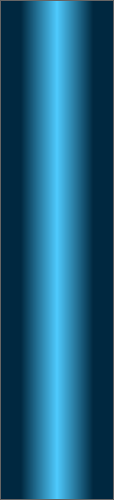
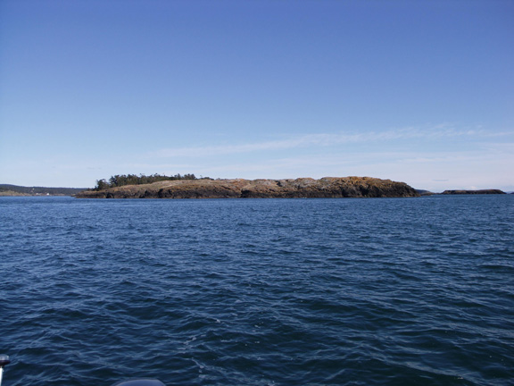
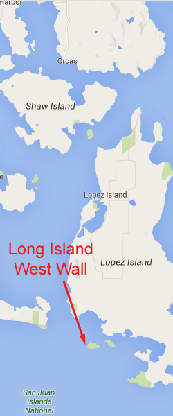
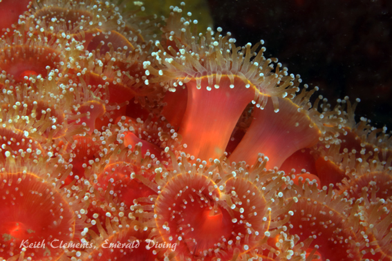
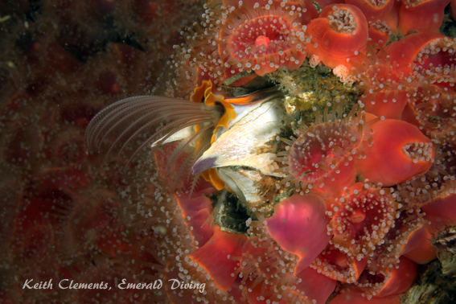
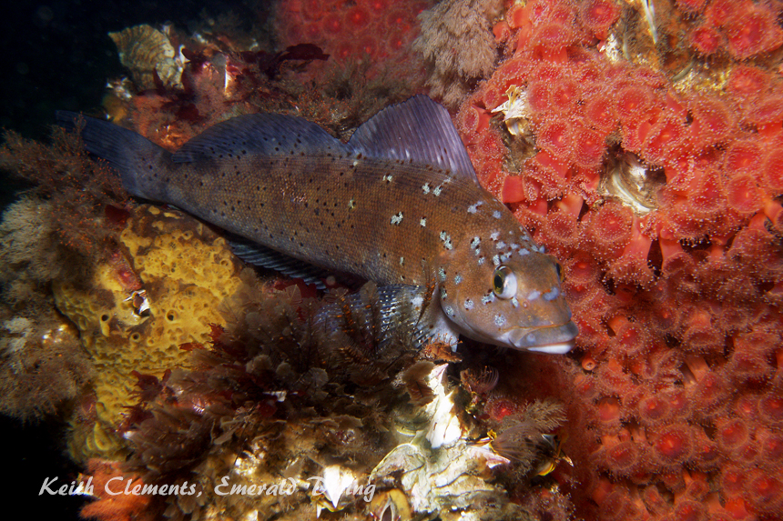
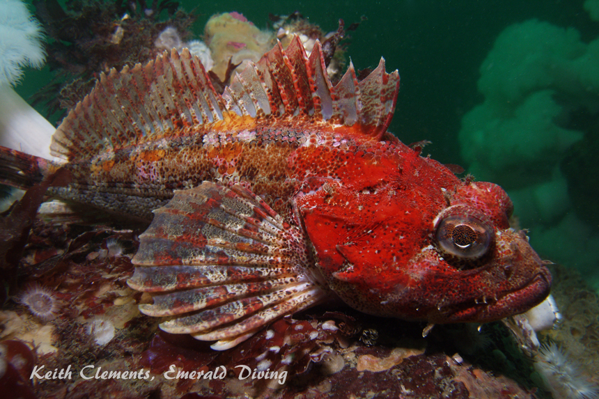
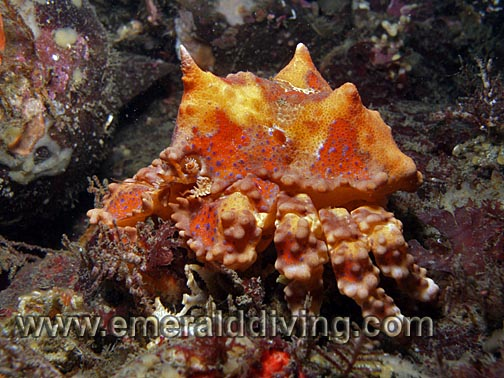
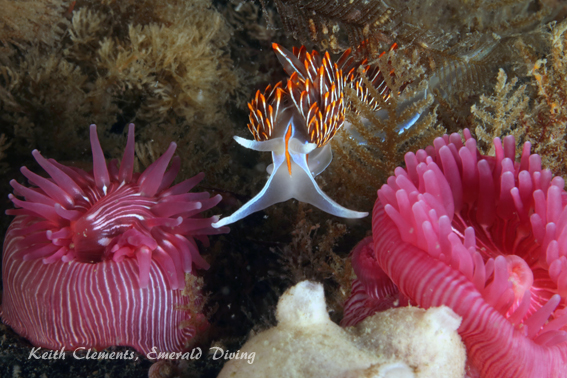

Double click to edit

Long Island Wall
Topography: Expansive sheer rock wall that drops over 140 feet.
San Juan Islands marine life rating: 5
San Juan Islands structure rating: 5
Diving depth: 70-110 feet.
Highlight: My favorite dive in the San Juans! Incredible collection of dense and colorful invertebrate life. A large colony of strawberry anemones carpets part of this wall. I call this site Neah Bay East.
Skill level: Intermediate
GPS coordinates: N48° 26.524 W122° 55.873
Access by boat: Long Island is tucked away on the southwest corner of Lopez Island in the San Juan Islands. The west side of Long Island is segregated from the main island by a shallow channel cut through the island. The dive site resides on the west side of this small and segregated section of the island. The wall is easily identified with a depth sounder as the depth drops to over 140 feet immediately offshore.
Shore access: None
Dive profile: I always run a live boat when diving this wall.
This dive is relatively easy when conditions are calm. I like to start my dive descending to the field of strawberry anemones. To do this, I enter the water about three quarters of the way down the wall to the south. After taking in the dazzling color offered by the field of red and pink soft corals, I head north along the wall at depth (typically about 90 feet) and work against the light current. This heavily encrusted wall is sheer in most areas and pocked with all kinds of holes, overhangs, and crevices to explore. When I reach my turning point or the end of the wall, I ascend to about 50-70 feet and follow the current back to the south, ending up back at the soft corals at the south end of the wall.
Kelp and surf grass are thick in places at shallow depths next to the island, but disappear quickly as the substrates angles down sharply before going vertical.
My preferred gas mix: EAN 34
Current observations:
Current Station: San Juan Channel (south entrance)
Noted Slack Corrections: None
This site gets hammered with current shooting through San Juan Channel on the ebb, which helps explain the existence of the clean, robust, and colorful invertebrate marine life on this wall. I only dive this site on a flooding current and make certain I end my dive prior to slack before ebb. Conditions change very quickly once the ebb begins. I have witnessed substantial standing waves near this site during an ebbing current.
Light to moderate flooding current gently pushes southbound along the wall and feeds into a potentially strong westbound current rushing by the south tip of the island. The current intensifies towards the south end of the wall past the field of strawberry anemones. Unless I am diving near slack or on a very light flood, I usually don’t stray too far south past the field of strawberry anemones. I target days where the maximum flood is 2.0 knots or less.
Boat Launch:
Cornet Bay State Park (Whidbey Island). Approximately 16 miles from this site. Excellent facility with bathrooms, docks, camping and general store.
Facilities: None
Hazards:
Current: This dive is only safe during a mild flooding current.
Depth: The Long Island Wall drops well beyond safe recreational diving depths. Most of the wall is
sheer. Good buoyancy and depth management skills are an absolute must.
Swell: This site is somewhat protected from swell, but not completely.
Marine life: This is my favorite dive in the San Juan Islands. The robustness and color of the invertebrate life is on par with the Cape Flattery area. Yellow, orange, and brown sponges combine with a host of nudibranchs and other invertebrates to create a visual spectacle. However, their are two massive colonies of vibrant strawberry anemones that always highlight my dives here. Both colonies are at the south end of the wall and start in about 50 feet of water and runs down to about 85 feet. I sometimes find candy-stripe shrimp nestled in the crimson anemones along the perimeter of the strawberry anemones and can very gently coax one out on to the strawberry anemones for a spectacular photo.
Puget Sound king crabs are a frequent find - in juvenile and adult forms. Some of the biggest Puget Sound king crabs I have seen have been on this wall. I often find three or four Puget Sound king crabs hunkered down inside small caves.
This current intensive site is not ideal fish habitat. Ever-present kelp greenllings abound, as do small lingcod. Rockfish populations are limited to occasional copper, black, and quillback rockfish. The exception is the Puget Sound rockfish, which is readily found in small schools. Occasional wolfeels, red Irish lords, and colorful longfin sculpins round out some of the more flamboyant finned residents.
San Juan Islands marine life rating: 5
San Juan Islands structure rating: 5
Diving depth: 70-110 feet.
Highlight: My favorite dive in the San Juans! Incredible collection of dense and colorful invertebrate life. A large colony of strawberry anemones carpets part of this wall. I call this site Neah Bay East.
Skill level: Intermediate
GPS coordinates: N48° 26.524 W122° 55.873
Access by boat: Long Island is tucked away on the southwest corner of Lopez Island in the San Juan Islands. The west side of Long Island is segregated from the main island by a shallow channel cut through the island. The dive site resides on the west side of this small and segregated section of the island. The wall is easily identified with a depth sounder as the depth drops to over 140 feet immediately offshore.
Shore access: None
Dive profile: I always run a live boat when diving this wall.
This dive is relatively easy when conditions are calm. I like to start my dive descending to the field of strawberry anemones. To do this, I enter the water about three quarters of the way down the wall to the south. After taking in the dazzling color offered by the field of red and pink soft corals, I head north along the wall at depth (typically about 90 feet) and work against the light current. This heavily encrusted wall is sheer in most areas and pocked with all kinds of holes, overhangs, and crevices to explore. When I reach my turning point or the end of the wall, I ascend to about 50-70 feet and follow the current back to the south, ending up back at the soft corals at the south end of the wall.
Kelp and surf grass are thick in places at shallow depths next to the island, but disappear quickly as the substrates angles down sharply before going vertical.
My preferred gas mix: EAN 34
Current observations:
Current Station: San Juan Channel (south entrance)
Noted Slack Corrections: None
This site gets hammered with current shooting through San Juan Channel on the ebb, which helps explain the existence of the clean, robust, and colorful invertebrate marine life on this wall. I only dive this site on a flooding current and make certain I end my dive prior to slack before ebb. Conditions change very quickly once the ebb begins. I have witnessed substantial standing waves near this site during an ebbing current.
Light to moderate flooding current gently pushes southbound along the wall and feeds into a potentially strong westbound current rushing by the south tip of the island. The current intensifies towards the south end of the wall past the field of strawberry anemones. Unless I am diving near slack or on a very light flood, I usually don’t stray too far south past the field of strawberry anemones. I target days where the maximum flood is 2.0 knots or less.
Boat Launch:
Cornet Bay State Park (Whidbey Island). Approximately 16 miles from this site. Excellent facility with bathrooms, docks, camping and general store.
Facilities: None
Hazards:
Current: This dive is only safe during a mild flooding current.
Depth: The Long Island Wall drops well beyond safe recreational diving depths. Most of the wall is
sheer. Good buoyancy and depth management skills are an absolute must.
Swell: This site is somewhat protected from swell, but not completely.
Marine life: This is my favorite dive in the San Juan Islands. The robustness and color of the invertebrate life is on par with the Cape Flattery area. Yellow, orange, and brown sponges combine with a host of nudibranchs and other invertebrates to create a visual spectacle. However, their are two massive colonies of vibrant strawberry anemones that always highlight my dives here. Both colonies are at the south end of the wall and start in about 50 feet of water and runs down to about 85 feet. I sometimes find candy-stripe shrimp nestled in the crimson anemones along the perimeter of the strawberry anemones and can very gently coax one out on to the strawberry anemones for a spectacular photo.
Puget Sound king crabs are a frequent find - in juvenile and adult forms. Some of the biggest Puget Sound king crabs I have seen have been on this wall. I often find three or four Puget Sound king crabs hunkered down inside small caves.
This current intensive site is not ideal fish habitat. Ever-present kelp greenllings abound, as do small lingcod. Rockfish populations are limited to occasional copper, black, and quillback rockfish. The exception is the Puget Sound rockfish, which is readily found in small schools. Occasional wolfeels, red Irish lords, and colorful longfin sculpins round out some of the more flamboyant finned residents.






Strawberry Anemone
Giant Barnacle
Kelp Greenling
Red Irish Lord
Puget Sound King Crab
Underwater imagery from this site

Opalescent Nudibranch